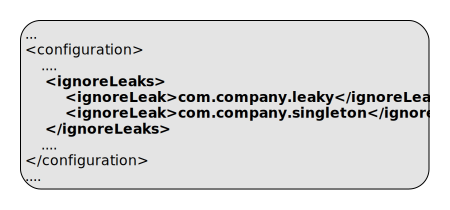

ep:unpack-nar
Full name:
com.tibco.ep:ep-maven-plugin:2.0.0-M1:unpack-nar
Description:
Unpack any nar (native archive) archives listed in dependences.
Nar archives are extracted into the build nar directory and are included on the java library path when running unit tests and native libraries are included in the fragment.
Attributes:
- Requires a Maven project to be executed.
- Binds by default to the lifecycle phase: process-resources.
Optional Parameters
| Name | Type | Since | Description |
|---|---|---|---|
| <ignoreLeaks> | String[] | 1.3.0 |
List of class names to ignore in leak detection. This is processed to a CSV value to include in unit testing and in jar manifest file. Example use in pom.xml:  |
| <productHome> | File | 1.0.0 |
Product home location. This path is resolved in the following way :
Example use in pom.xml: 
Example use on commandline:  User property is: com.tibco.ep.ep-maven.product. |
Parameter Details
<ignoreLeaks>
List of class names to ignore in leak detection. This is processed to a CSV value to include in unit testing and in jar manifest file.
Example use in pom.xml:
- Type: java.lang.String[]
- Since: 1.3.0
- Required: No
<productHome>
Product home location. This path is resolved in the following way :
- If property com.tibco.ep.ep-maven.product is set, use that, else
- If environment variable TIBCO_EP_HOME is set, use that, else
- Use localrepository/../product-group/product-artifact/product-version (so default is ~/.m2/product-group/product-artifact/product-version)
Example use in pom.xml:
Example use on commandline:
- Type: java.io.File
- Since: 1.0.0
- Required: No
- User Property: com.tibco.ep.ep-maven.product